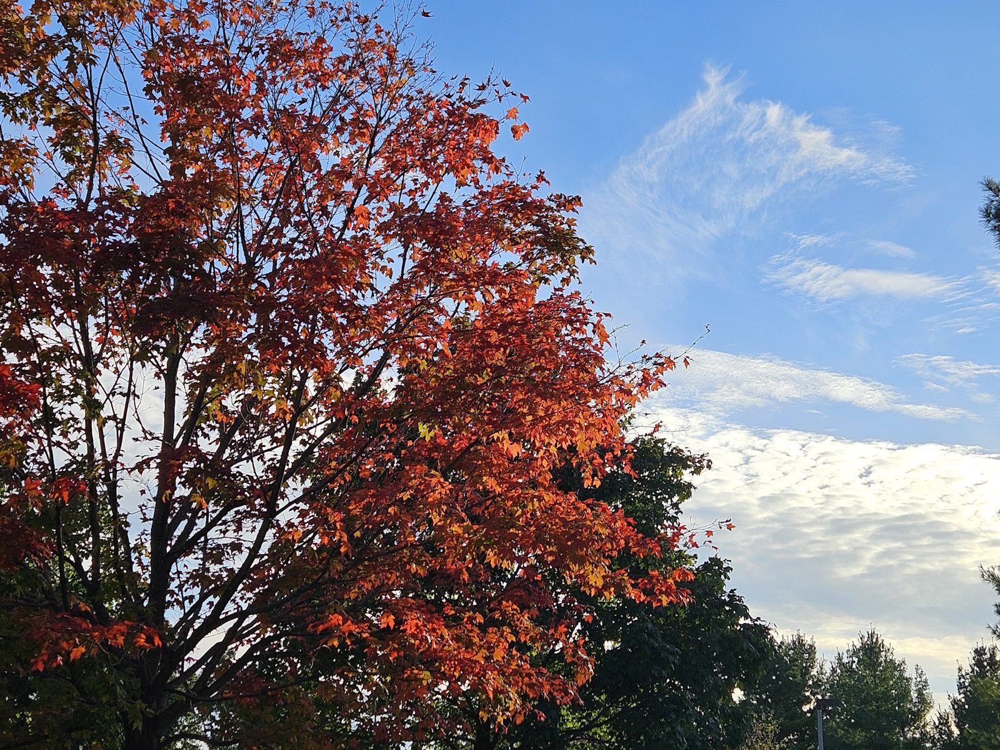

The (Un)romantic Season and How to Leave Town
Ryan Wilbert October is probably my favorite month of the year – and it’s not just because it’s my birthday. The cool air of fall and the general whimsy of what I like to call “getting my academic on” puts a slight pep in my step as I finally get the chance to put on my flannels I’ve stockpiled all summer. Although it seems to be the opposite, as eventually the beautiful warm hues whither from the trees, fall is the season of growth in my eyes. As a student, the year really starts in September, and so the fall functions as my time to put those summer resolutions into action. This excitement culminates with the gloom of Halloween, an evening (or, a very long weekend if you’re on a college campus) when the cold air battles to pull you into despair while you hold on to the adrenaline rush of facing metaphorical or even literal fears. Yeah, I honestly think Halloween is the most romantic holiday of the year.
To soundtrack this season of melancholy and growth, I’d like to turn my attention towards one of my favorite albums ever: How to Leave Town by Car Seat Headrest. By the end of this month, it will have been exactly ten years since this album first released. To celebrate, I’m working on an article for Impact 89FM that dissects the album's lyrical themes and how much it means to me. If you aren’t familiar with the album or the band as a whole, Headrest is an indie-rock group that started out as just one guy, Will Toledo, before he became a festival sensation. This album was the final record released before he signed to Matador Records, acting as a send off to his early lo-fi era. Jam-packed with existential pleas, self-referential quips, and an unrivaled storytelling ability, I can’t imagine the fall season without this album. Check out the tracklist below:
- The Ending of Dramamine – 14:17
- Beast Monster Thing (Love Isn't Love Enough) – 6:49
- Kimochi Warui (When? When? When? When? When? When? When?) – 4:44
- I-94 W (832 mi) – 1:26
- You're in Love With Me – 5:42
- America (Never Been) – 7:15
- I Want You to Know That I'm Awake/I Hope That You're Asleep – 8:43
- Is This Dust Really From the Titanic? – 1:57
- Hey, Space Cadet (Beast Monster Thing In Space) – 11:26
I’ll keep updating this page with my updates and thoughts on the album, as well as any other music I find to capture fall at its best. Stay tuned…